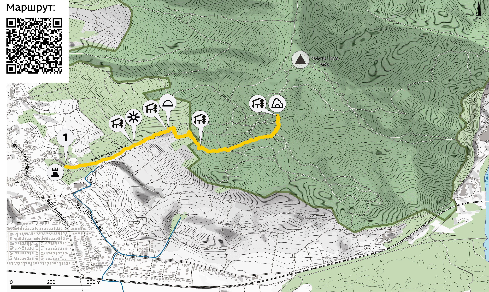
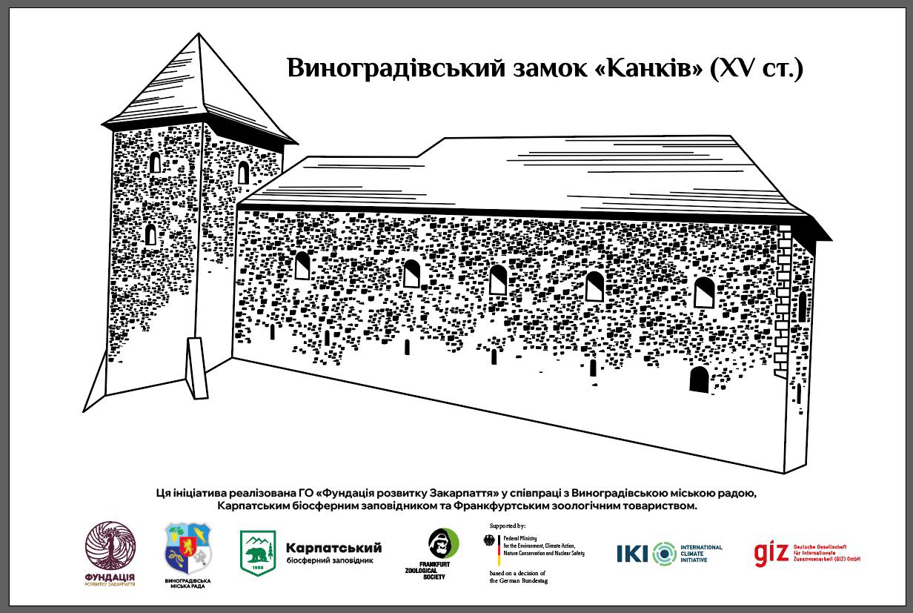
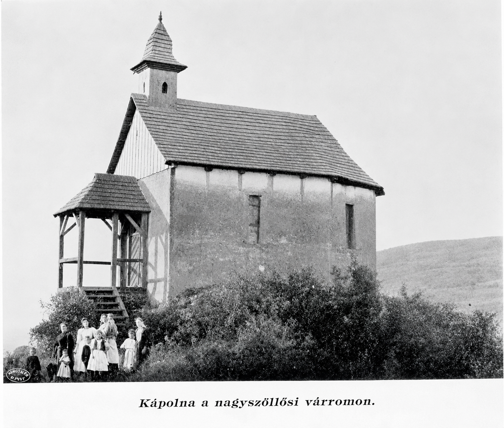

Туристичний маршрут "Загадка Чорної Гори"
Пішохідний маршрут починається від руїн замку «Канків», який є однією з найдавніших фортець України та важливою історичною пам'яткою Закарпаття. З висоти замкового пагорба відкриваються мальовничі панорами міста Виноградів.
Далі маршрут пролягає територією ботанічного заказника місцевого значення «Чорна гора» — унікальної природної перлини Закарпаття. Гора має вулканічне походження та складена андезитами, ліпаритами і туфами. Її східні схили стрімко спускаються до долини р. Тиса, утворюючи своєрідні скельні ландшафти. На вулканічних породах сформувалися потужні бурі лісові ґрунти, які місцями перериваються виходами скельних порід, створюючи цікаві природні форми рельєфу.
Територія заказника відзначається багатством рослинного світу. Тут зростають рідкісні та червонокнижні види рослин, а також зосереджені унікальні для України природні осередки дубових лісів за участю ясена білоцвітого. Лісові стежки проходять серед вікових дерев, де можна почути спів птахів, побачити різноманітних представників місцевої фауни та відчути гармонію з природою.
Під час подорожі туристи мають можливість насолодитися мальовничими краєвидами, відчути тишу лісу, вдихнути свіже повітря та зануритися в атмосферу справжньої природної відокремленості. Маршрут дарує чудову нагоду для фотографування природних ландшафтів, спостереження за рослинним світом та знайомства з геологічною історією місцевості.


Завершується маршрут біля рукотворної печери «Морське око». Таку назву їй дали місцеві мешканці, оскільки в кінці печери знаходиться водойма, рівень води в якій залишається стабільним попри численні спроби її відкачування. Загальна довжина печери становить близько 30 метрів. Усередині можна побачити стрімкі заглиблення (сифони), які, за місцевими переказами, були небезпечними пастками для шукачів легендарних скарбів тамплієрів. Саме тому серед місцевих жителів вона відома також як «Печера тамплієрів». Таємнича атмосфера печери та оповиті легендами історії роблять цю локацію особливо привабливою для відвідувачів.
Маршрут вдало поєднує історичну спадщину, природні багатства та елементи легкої пригодницької мандрівки. Він підійде як для сімейного відпочинку, так і для любителів активного туризму, які прагнуть відкрити для себе маловідомі, але надзвичайно цікаві куточки Закарпаття.
Рекомендації для туристів:
- обирайте зручне трекінгове взуття з рельєфною підошвою, що забезпечує надійне зчеплення з поверхнею;
- для огляду печери обов'язково майте при собі ліхтарик або скористайтеся освітленням мобільного телефону;
- зважаючи на низький вхід до печери, рекомендується одягати зручний одяг, який не обмежує рухів;
- дотримуйтеся правил поведінки на природоохоронній території, не залишайте сміття та бережіть природні й історичні об'єкти маршруту;
- у дощову погоду окремі ділянки стежки можуть бути слизькими, тому пересувайтеся обережно.

Севлюшський замок XIII — XV ст.Пам'ятка архітектури національного значення
Севлюшський замок віднесено до об'єктів культурної спадщини національного значення, які вносяться до Дер-жавного реєстру нерухомих пам'яток України.
Місцеві називають цей замок «Канків». Розташований замок на Чорній горі, на висоті 568 метрів над рівнем моря і є однією з найстаріших фортець України. За даними за-карпатських археологів, котрі проводили дослідження замку в 2007 році, перше заселення пагорбу відбулося в епоху пізньої бронзи культурою Станово XIV-XII ст. до н.е., а зведення кам'яних фортифікацій датовано кінцем XIII початком XIV століття н.е.
Зі схилів Чорної гори можна було контролювати значну частину Притисянської рівнини, а спорудження замку в такій місцевості, біля входу в Мараморошську долину, давало потенційну можливість господарям фортеці охо роняти сухопутний та річковий шляхи, котрими возили сіль у давнину. У вересні 1307 року король Карл | Роберт передав Севлюшський замок біхарському магнату Б.Бор-шо (Бенедеку), який із 1308 року розмістив тут постійний гарнізон і провів повну реконструкцію оборонних споруд Канкова протягом 1307-1308 pp.
Через кілька років, Беке Боршо разом зі своїм братом, ви-ступив проти короля Карла Роберта Анжуйського. У 1317 році під час штурму королівськими військами, замок було зруйновано. Згодом, король наказав відновити укріплення і подарував його королеві Марії, а Севлюш проголосив в 1329 році коронним містом, яке стало важливим торговим центром на «соляному шляху».
Наприкінці XIV століття, у 1399 році, король Жигмонд Люксембурзький подарував Севлюш магнатові Петеру Перені, який на місці старого замку зводить нові кам'яні стіни.
Після побудови нового родового палацу в місті, в кінці XV ст. Барон Перені передав фортецю монахам-францисканцям, які перетворили її в укріплений монастир. Так, на території замку на початку XVI ст. францисканці побудували костел значних розмірів. Існує навіть припущення, що саме від назви елемента шати монахів (капюшон накидка «Канко») замок і отримав свою сучасну назву «Канків».
З приходом францисканців, замок наповнився релігійним духом: ченці займалися молитвами, освітою та допомогою місцевому населенню. Навколо замку поступово сформува-лося поселення, яке згодом стало містом Севлюш (сучасний Виноградів). Нова чернеча обитель була досить впливовою, зокрема, сюди були перенесені мощі Яна Капістрана.
У 1556 році нащадок Петера Перені Ференц, який прийняв протестантство, вигнав зі своїх володінь все католицьке ду-ховенство та захопив францисканський монастир. Ченців, які чинили опір було вбито, а їх тіла разом із мощами свя-того Яна Капістрана скинуто в замковий колодязь, що зна-ходився між основною спорудою замку та церквою.
В результаті, проти бунтівного Перені був посланий загін імператорських військ, який штурмом узяв і зруйнував укрі-плення в 1557 1558 рр. Після цього замок більше не відро-дився. Будівлю «підкошували» сніги і дощі, місцеві жителі розібрали його на камені, а навколо місця, де він розташо-ваний, посадили виноградники.
У 1976 році на території замку знімали один із епізодів фільму «Табір йде в небо» режисера Еміля Лотяну. На момент зйомок каплиця замку була перекрита покрівлею, а всередині, на стінах, було видно значні фрагменти фреско-вого живопису, від яких у наші дні не залишилося і сліду.
Загадкові руїни Канкова на тлі мальовничої природи Вино-градівщини залучили сюди знімальні групи й інших фільмів, серед яких «Злива над полями», «Над Тисою».
Фотогалерея






Ботанічний заказник "Чорна гора"
Заказник площею 747 га розташований у районі Вулканічних Карпат на Чорній горі (508 м н.р.м.) — одній з найцікавіших у флористичному та фітоценотичному відношеннях вершин Вигорлат-Гутинського хребта, що знаходиться між містом Виноградів та селом Мала Копаня.
Чорна гора має вулканічне походження і складена андезитами, ліпаритами та туфами. Східні схили круто обриваються до долини річки Тиса, формуючи специфічні скелясті ландшафти. На вулканічних породах сформувалися потужні бурі лісові ґрунти, які місцями перериваються виходами скельних порід.
Масив знаходиться у найтеплішій кліматичній зоні Закарпаття. Завдяки південній експозиції та захищеності від північних вітрів, тут формується унікальний мезоклімат, що сприяє виживанню теплолюбних реліктів.
Внаслідок багатовікової господарської діяльності рослинний покрив Чорної гори зазнав істотних змін.
Найкраще природна рослинність збереглася біля верхньої частини гори на скелястих схилах. Панівними є формації дубових та букових лісів. Букові ліси поширені в основному на північному мегасхилі.
Дубові ліси сформовані дубом скельним, частково дубами багатоплідним та Далешампа. На виходах андезитових порід збереглися унікальні осередки дубових лісів за участю ясена білоцвітого. Ці фітоценози є реліктовими й надзвичайно рідкісними для України. Поодиноко в цих ценозах трапляються берека та клен татарський. У чагарниковому ярусі ростуть такі теплолюбні види, як бирючина звичайна, бруслина європейська, дерен та виноград лісовий. Також виявлено поодинокі кущі інжиру звичайного.
Флора масиву нараховує близько 400 видів вищих судинних рослин. Із флористичного погляду особливу цінність становлять локалітети остепнених і скельних фітоценозів на крутих південних схилах. Тут зростають рідкісні для Українських Карпат види: жостір проносний, сугайник угорський, перлівка трансільванська, воловик Баррельє, тордиліум великий, солонечник звичайний, кольраушія пагононосна та інші. На затінених вологих скелях трапляється аспленій чорний, а у підліску зростає рокитник австрійський. У трав'яному ярусі поширені буквиця лікарська, оман верболистий, піретрум щитковий та інші.
Для фауни "Чорної гори" характерна наявність специфічних теплолюбних видів, зокрема безхребетних.
Фотогалерея


Печера "Морське око"
Таку назву печері дали місцеві мешканці, оскільки вона завершується водоймою, рівень якої залишається стабільним попри непоодинокі спроби її відкачування. Простягається печера вглиб приблизно на 30 м.
За даними історичних джерел, печера є рукотворною спорудою, вирубаною в скелі.
Існують різні легенди та оповідання про печеру. Багато хто вірить, що печеру затопили спеціально з ціллю приховати свої таємниці. Одні стверджують, що це зробили німці в період Другої світової війни, щоб уберегти наукові дані, які зберігаються за залізними дверима. Деякі місцеві жителі навіть стверджують, що особисто бачили ці двері та німецьку вишку охорони біля входу.
В іншій версії, йдеться про золото лицарів-храмовників тамплієрів, що закопане в печері. Приводом для цієї теорії стали знайдені на стінах написи та мальтійські хрести, які належали таємному ордену. Тамплієрам також приписують стрімкі заглиблення, що наявні усередині печери (сифони). Одна версія стверджує, що сифони були пастками: між двома заповненими водою ділянками розташовувалася горизонтальна частина з повітрям, де тамплієри могли розбити ємність з хімічною речовиною, спричиняючи смерть шукачам скарбів, які пірнали в перший сифон, а випливаючи з нього з першим подихом ковтали «смерть».
Є різні припущення, куди веде ця печера. Дехто вважає що вона поєднана з римо-католицьким костьолом, що знаходиться в місті. Також вважається, що печера поєднана з замком «Канків» та ще однією печерою, яка знаходиться неподалік від замку.
Існує ще декілька легенд про печеру на Чорній горі, ось одна з них:
«Колись, дуже давно, один тутешній свинар пас свиней в околицях теперішнього Виноградова. Одного разу він помітив відсутність однієї свині. Почав її шукати. Та невдовзі свиня сама повернулася. А потім, у наступні дні, вона знову і знову кудись зникала. Свинар вирішив стежити за нею, але при великому старанні це йому не вдалося. Вислідити, куди вона зникла, не зміг. Проте помітив, що вона поверталася ситою і веселою.
Із свинею ще було порося, яке все ще трималося своєї матки. Якось одного разу, коли свиня у черговий раз зникла, порося трохи затрималося, загравшись з іншими поросятами. Потім, ніби схаменувшись, що матері немає, помчало у напрямку лісу. Свинар за ним. Порося прибігло до печери на горі й зникло всередині. Свинар, не вагаючись, пішов слідом за поросям. Пройшовши довгим темним тунелем, він несподівано опинився у величезному підземному залі. Там він побачив свою свиню, яка спокійно поїдала... золото. Весь зал був заповнений золотими злитками та монетами, які виблискували в напівтемряві. Чоловік, вражений побаченим, набив золотом свої кишені та пазуху. Але як тільки він зібрався виходити, почув страшний гуркіт — це з'явився господар скарбів, чорний велетень (за іншими версіями — нечиста сила). «То вшитко золото, на котрому лежиш, — тепер твоє», — почув глумливий голос старого чоловіка. Але то був не просто чоловік, а сам нечистий. Нещасний свинар там і помер, бо вже не зміг піднятися.
Відтоді в народі знали, що в тій печері живе нечистий, який вершить чорні діла, тому й назвали гору Чорною».
Фотогалерея печери


Служба екстреної
допомоги
In an emergency, dial